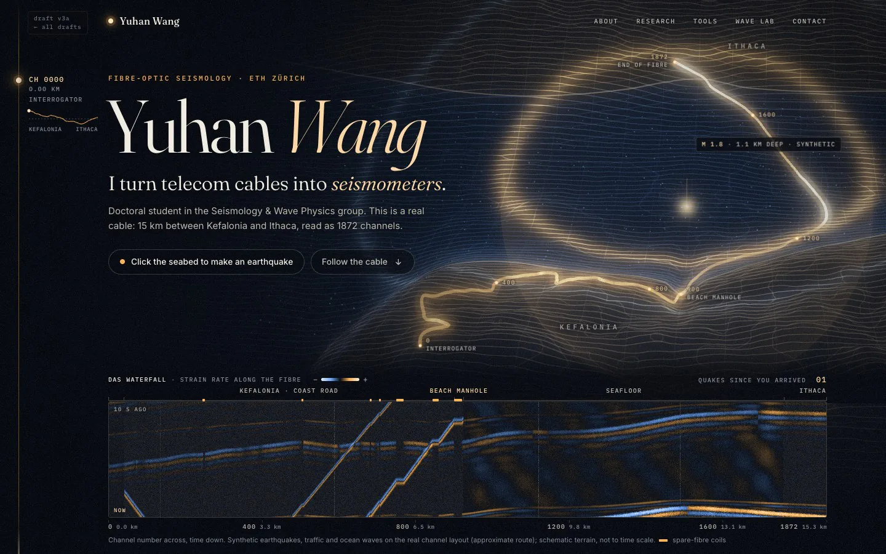
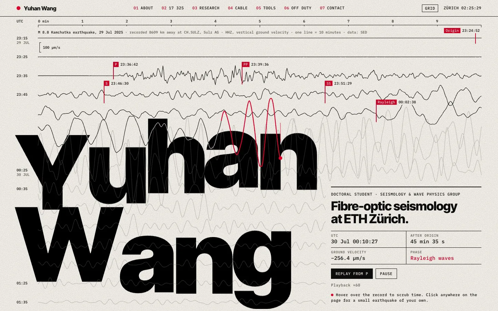
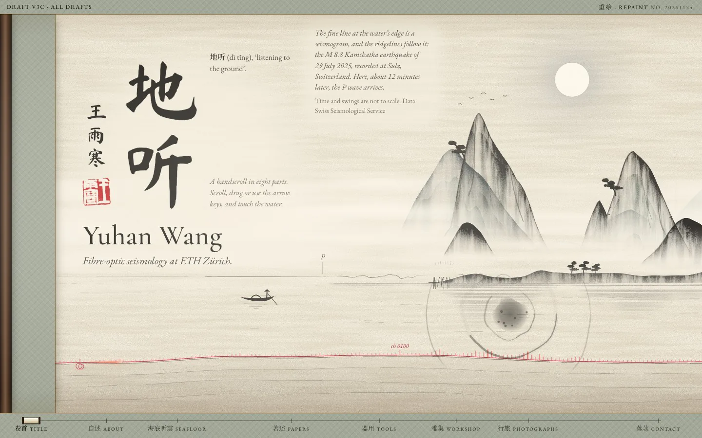
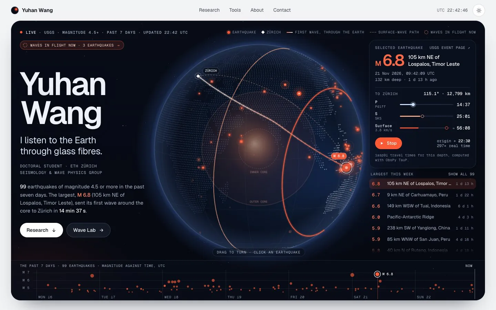
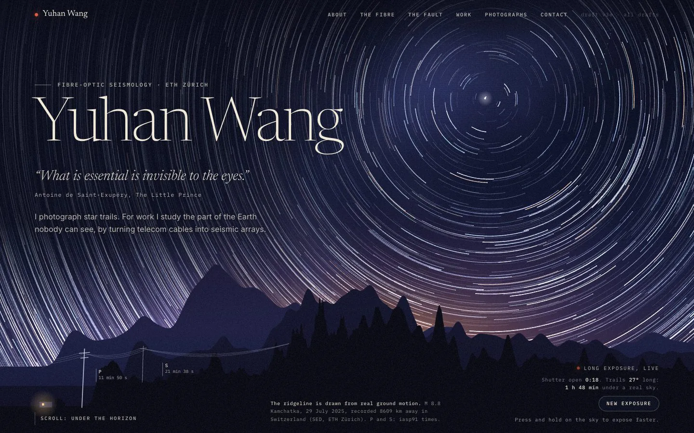
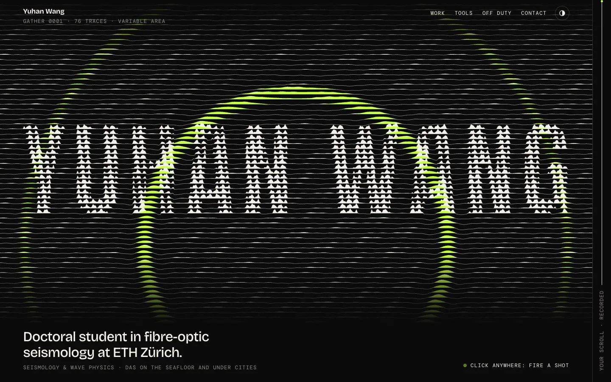
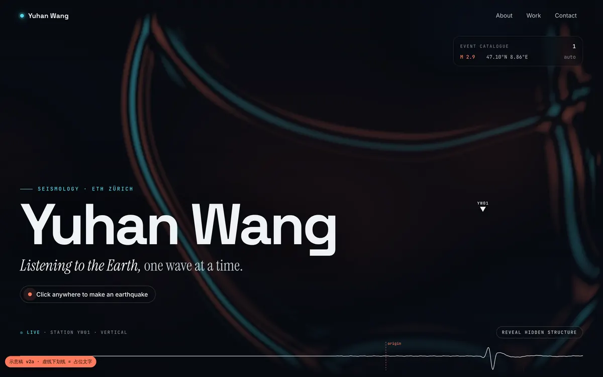
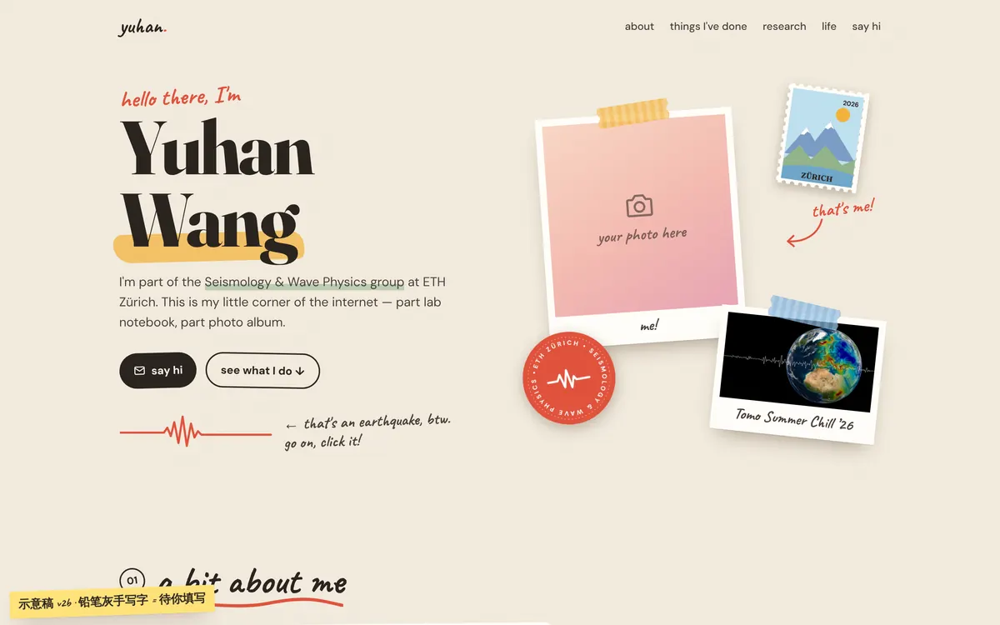
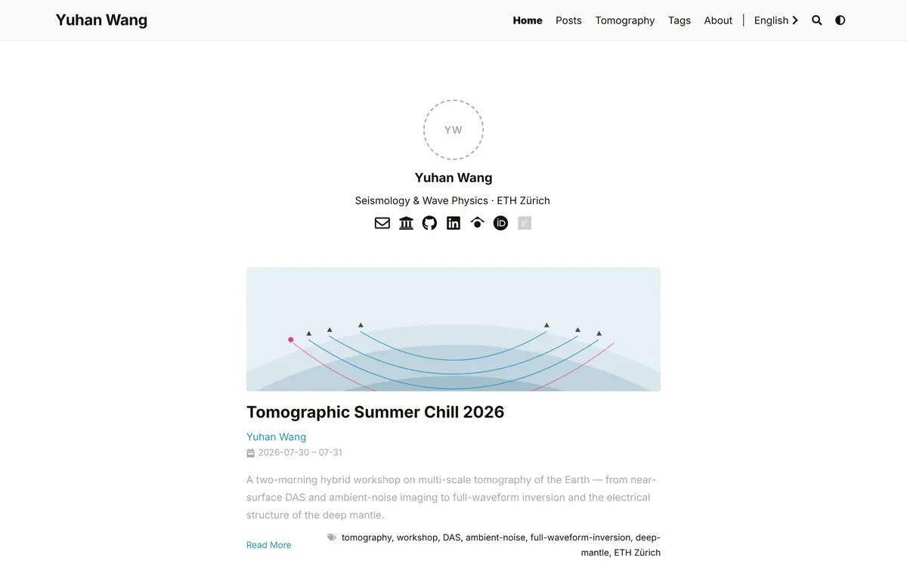

Yuhan Wang · homepage drafts · round 3
主页设计稿：第三轮，六个新方向
这一轮不再用占位文字：内容来自你的 ORCID、论文、GitHub 仓库和旧主页，画面里跑的是真实数据。每一稿都可以直接点开试玩，手机上也可以。
- 真实地震图 · 2025 年堪察加 M 8.8，瑞士 CH.SULZ 台
- 实时地震目录 · USGS 过去 7 天
- 你的海缆 · Kefalonia–Ithaca，1872 道
- 你的论文数字 · 17 325 对 893
- 你的印章、肖像和摄影
第三轮 v3 · 2026-11-22

v3aFIBRE
这一页就是那根光缆
夜色里的 Kefalonia–Ithaca 海峡，海缆按真实走向铺在海底。整页的滚动位置就是沿光纤的距离：道号 0000 → 1872。
- 点一下就是一次地震：P、S 波扫过光纤
- 下方实时画出 1872 道的 DAS 瀑布图
- 893 对 17 325 的点阵，20 倍一眼可见

v3bPLAKAT
被真实地震摇动的瑞士海报
苏黎世的国际主义平面风格：米白纸、黑字、一个红。名字的每个字母跟着真实地面运动一起动。
- 堪察加 M 8.8 的真实记录画成滚筒地震图
- P 波轻颤、S 波摇晃、面波缓慢摆动
- 点任意位置，整张海报"地震"一次

v3c地听
水墨长卷：山脊就是地震图
横向展开的手卷。程序画出的水墨山水，水下一根朱红光纤贯穿全卷，卷首盖着你自己的印章。
- 山脊线由真实地震记录调制
- 点水面，墨晕散开，光纤随之闪动
- 摄影作品装裱成册页

v3dLIVE EARTH
实时地球观测台
Bento 网格，每一块都是一台小仪器。主角是一颗实时地球：USGS 过去 7 天的真实地震，每天打开都不一样。
- 选一个地震，算出 P、S 波多久到苏黎世
- 波前在球面上回放
- 明暗两套主题

v3eINVISIBLE
星空之上，大地之下
从你的星轨照片出发：实时长曝光的星空，地平线是真实地震图。往下滚，镜头沉入地下；再回到地面，看你的摄影。
- 星轨边看边累积
- 天空到地下的连续转场
- 最个人的一稿：照片、阅读、音乐

v3fWIGGLE
名字就是一张地震道集
极简、画廊感。七十道实时绘制的变面积地震道，振幅随字形变化，你的名字从波形里"抖"出来。黑底荧光绿，按 I 反色。
- 点首屏放一炮：P、S 波两圈扫过道集
- 右侧细条把你的滚动记录成地震图
- 六稿里最克制、最快的一稿
上一轮 v2 · 2026-11-04

v2a
暗色交互 · 点击即地震
实时二维波动方程，附带 Wave Lab 六个实验。新稿都保留了通往 Wave Lab 的入口。
打开 →
v2b
温暖手账 · 生活感
纸张、拍立得、胶带、便利贴；研讨会是一张票根，联系方式是一张明信片。
打开 →
v2c
简洁博客 · 参考 kaichu.io
顶栏导航、Posts 归档、标签云、About、带目录的文章页、站内搜索、明暗切换。
打开 →
需要你确认的几处（都写在
CONTENT.md 里）：
- 中文名「王雨寒」取自旧主页里的 LinkedIn 链接；v3b、v3c 用到了它，v3c 还用了你的印章。
- 2023–2025 在 ETH 的学位名称，稿子里写的是 MSc, Earth and Planetary Sciences。
- 肖像、摄影和兴趣爱好（阅读、音乐）来自 2021–22 年的旧主页。
- 那张安徽照片上的字是「鷂落坪」（Yaoluoping），之前误读成「鹤落坪」，六稿都已改正。
- v3f 两张示意图的说明写了常识性的 DAS 物理（积分测量是沿光纤的叠加；光纤平行于波前时几乎记录不到），你的材料里没有原话，请看措辞是否合适。
- v3b 的“地面起伏约 1.7 mm”是对真实记录积分算出来的，页面上注明了算法。
- v2 稿里的 ETH 个人页链接已失效，新稿换成了组里人员列表上的那个。